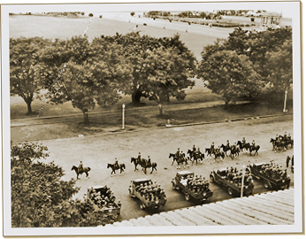

|
j
a v a s c r i p t |
April 29, 1942, Hirohito's Birthday

Victory Parade
Manila was a dead city today as most stayed home or in their neighborhoods. I biked to the Meyer's (without a flag) to get a glimpse of the city. From their window I could see a long stretch of San Juan road, and for a while, not a thing was to be seen — human, animal or vehicle. This afternoon Mr. Schultze passed by usually crowded Legarda Street and said it was empty. Manila told the Japanese off today, and mighty well too. A report says many feet were burned when prisoners were marched barefoot to the PGH through streets of softening asphalt. Ma is now running a fever after being affected by much talk of the ill treatment of prisoners. On this beautiful night under the light of a full moon, Corregidor still stands despite the best wishes of the Japanese. |
|
|
|
|